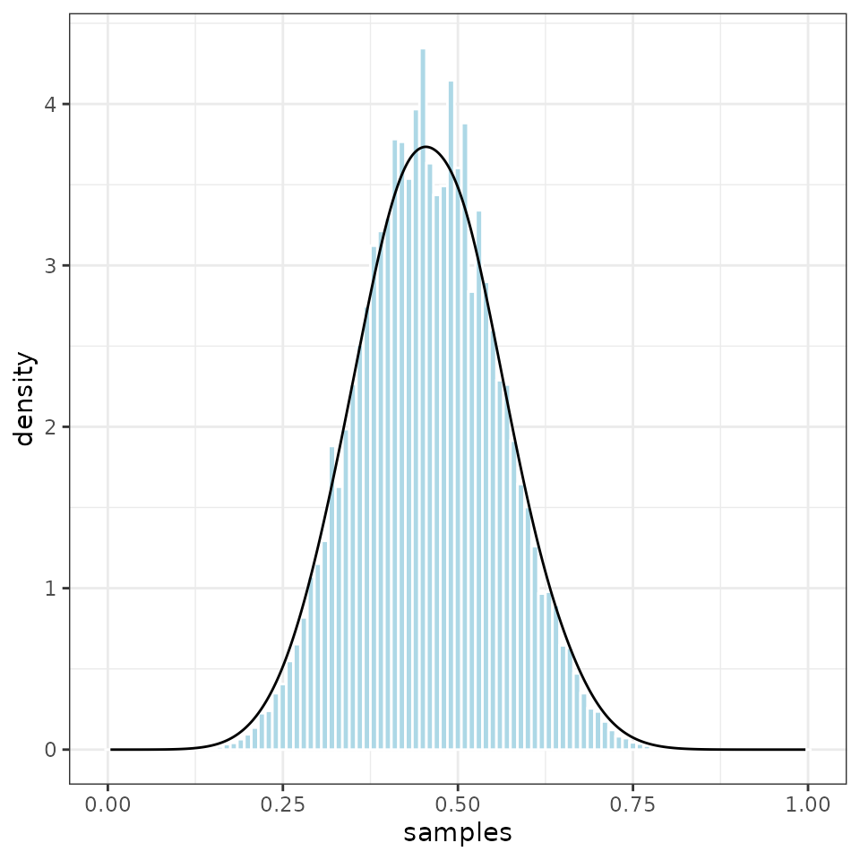

This tutorial describes how to analyze a simple coin-flipping model using treepplr.
We assume that the probability of obtaining heads with our coin is
p, and that we have a set of flips informing us about the
value of p.
In a Bayesian analysis of this problem, we need to specify a prior
probability distribution for the value of p. Here, we will
assume that p is drawn from a Beta(2,2)
distribution.
Understanding the coin model
The coin model is one of the most basic models in the TreePPL model library. You can find all available models and some information about them here.
If you want to look at the TreePPL code here in R, you can use the following functions:
model_path <- tp_model("coin")
readr::read_file(model_path)The main part of the model is defined in a function called
coinModel:
model function coinModel(coinflips: Bool[]) => Real {
// Uncomment if you want to test the input
//printLn("Input:");
//let coinStr = apply(bool2string, coinflips);
//printLn(join(coinStr));
assume p ~ Beta(2.0, 2.0); // prior
let n = length(coinflips);
for i in 1 to n {
flip(coinflips[i], p); // likelihood
}
return(p); // posterior
}The definition of this function is preceded by the keywords
model function. All model scripts must have exactly one
model function.
The model function takes as input argument(s) the observed data that
we wish to condition on. In our case, the data are represented by a
sequence (vector or array) of Boolean
(TRUE/FALSE) values.
Note that TreePPL uses type annotation of input variables in the form
of <argument_name>: <data_type>. The square
brackets [] are used to denote a sequence type, that is,
coinflips: Bool[] tells us that the model function takes a
single argument by the name of coinflips, and the data type
is a sequence of Booleans.
The return type of a function is specified using the format
=> <data_type>. Our model function returns the
value of p. In general, the model function should return
the model parameters for which we are interested in inferring the
posterior distribution.
The model function starts with a few statements that are commented
out by having // put in front of them. The code in these
lines can be used to print the value of the coinflips
argument.
The statement assume p ~ Beta(2.0,2.0) specifies the
prior probability distribution for the parameter p in our
model. TreePPL provides a number of built-in probability distributions;
they all have names starting with a capital letter, like the
Beta distribution used here.
The assume statement is followed by a loop over the
input data sequence, conditioning the simulation on each observed value
(heads/TRUE or tails/FALSE). Specifically,
this is achieved by calling the help function flip.
The flip function is defined as follows:
function flip(datapoint: Bool, probability: Real) {
observe datapoint ~ Bernoulli(probability);
}Bernoulli is a probability distribution on a binary
outcome space, represented as a Boolean variable taking the values
TRUE or FALSE. This is the appropriate
probability distribution for coin flipping.
The single parameter of the Bernoulli distribution,
called probability in the flip function, is
assumed by convention to be the probability of obtaining the outcome
TRUE. In our case, this would be the probability of
obtaining heads.
The observe statement weights the simulation with the
likelihood of observing a particlar data point from the Bernoulli
distribution.
This completes the TreePPL description of the coin flipping model. All TreePPL model descriptions essentially follow the same format. For a more complete coverage of the TreePPL language, see the language overview in the TreePPL online documentation.
Model compilation and inference strategy
TreePPL offers a variety of inference methods. Different methods work
best for different models. Here, we will use sequential Monte Carlo
(SMC), specifically the bootstrap particle filter version (the
method=smc-bpf option).
The function tp_compile() has many optional arguments
that allow you to select among the inference methods supported by
TreePPL, and setting relevant options for each one of them. For an
up-to-date description of available inference strategies supported, see
tp_compile_options().
Now let’s compile the model to en executable that also contains the necessary machinery to run the chosen inference method.
exe_path <- tp_compile(model = "coin", method = "smc-bpf", particles = 1000)Data
Now we can start analyzing the model by inferring the value of
p given some observed sequence of coin flips. To do this,
we need to provide the observations in a suitable format. To load the
example data provided in the treepplr package, use:
data <- tp_data(data_input = "coin")We can look at the structure of the input data using:
jsonlite::fromJSON(data)$coinflips
[1] TRUE TRUE TRUE FALSE TRUE FALSE FALSE TRUE TRUE FALSE FALSE FALSE TRUE FALSE TRUE FALSE FALSE TRUE FALSE FALSEThe TreePPL compiler requires data in JSON format. The conversion
from R variables to appropriate JSON code understood by TreePPL is done
automatically by treepplr for supported data types. For
instance, logical vectors in R are converted to sequences of Booleans
(Bool[]) in TreePPL.
In R, the data are collected in a list. Each element in the list is
named using the corresponding argument name expected by the TreePPL
model function. The arguments can be given in any order in the list. In
our case, the model function only takes one argument called
coinflips, so the R list only contains one element named
coinflips.
Run TreePPL
Now we can run the TreePPL program, inferring the posterior
distribution of p conditioned on the input data. This is
done using the tp_run function.
Let’s run 10 sweeps (10 SMC runs, if you wish).
output_list <- tp_run(compiled_model = exe_path, data = data, n_sweeps = 10)The run should take a few seconds to complete depending on your machine.
In general, the TreePPL inference strategies can be described as nested approaches where the outermost shell defines the character of the inference output. If the outer shell is SMC, as is the case here, the returned object will be a nested R list. Each entry in the outermost list layer will correspond to a sweep. Each sweep will contain three values: the normalizing constant estimated in that sweep, each of the returned values from the model function (one returned value for each SMC particle), and the likelihood weight of each returned value (one weight for each particle).
Plot the posterior distribution
In SMC we can assess the quality of the inference by running several sweeps and comparing their normalizing constants to test if they generated similar estimates of the posterior distribution. A popular argument from the SMC literature suggests that the SMC estimate is accurate if the variance of the estimates of the normalizing constant across sweeps is lower than 1.
To check the variance of the normalizing constant, use the
tp_smc_convergence() function. But first, we’ll use the
tp_parse_smc() function to convert the results returned by
TreePPL into an R data frame of appropriately weighted values, taking
both the particle weights and normalizing constants (the sweep weights,
if you wish) into account. Note that both the particle weights and
normalizing constants are given in log units.
output <- tp_parse_smc(output_list)
tp_smc_convergence(output)
#> [1] 0.000693138It seems that our run provides a quite accurate estimate of the posterior distribution, as the variance is much smaller than 1.0.
It is also easy to plot the sampled values.
ggplot2::ggplot(output, ggplot2::aes(samples, weight = norm_weight)) +
ggplot2::geom_histogram(ggplot2::aes(y = ggplot2::after_stat(density)),
col = "white", fill = "lightblue", binwidth=0.01) +
ggplot2::geom_density() +
ggplot2::theme_bw()